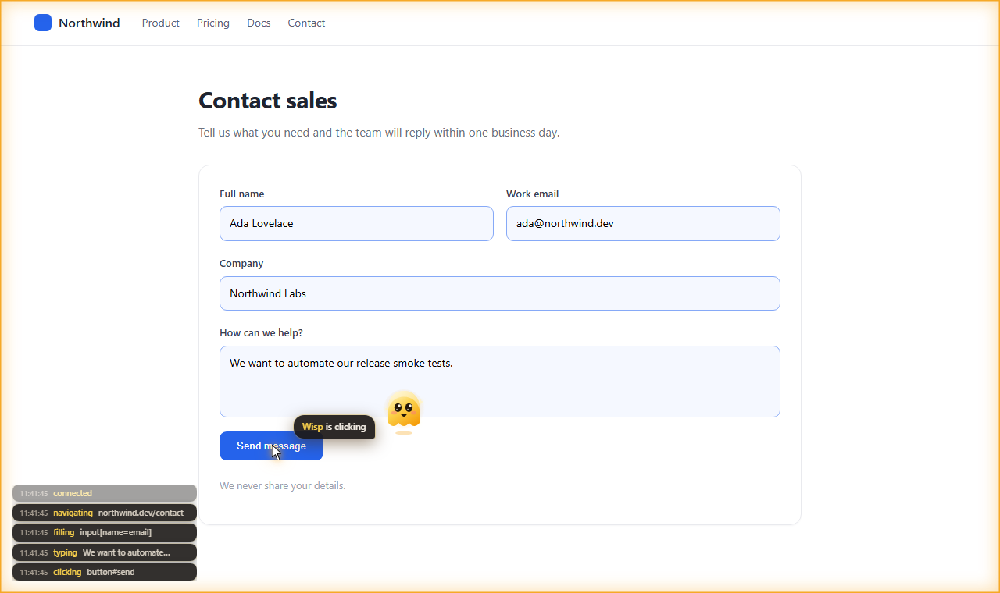
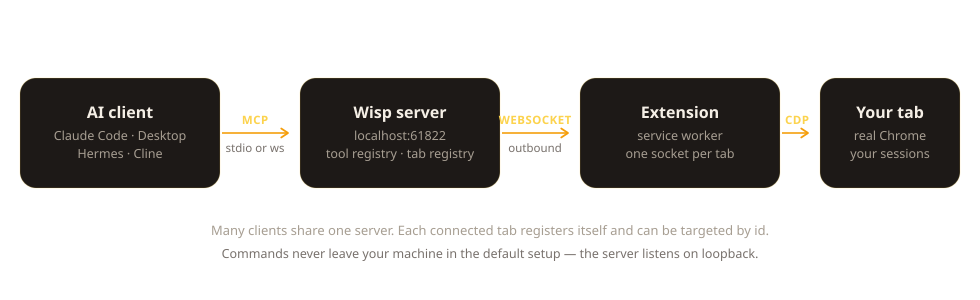
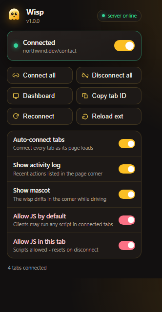

Wisp connects any MCP client — Claude Code, Claude Desktop, Hermes, Cline — to the Chrome you already have open. Your tabs, your logins, your session. No headless driver, no second browser, no copy-pasting cookies.

Most automation spins up a clean, logged-out browser and then fights to look human. Wisp skips that: it drives the tab already in front of you.
Your cookies, extensions, profile and 2FA state are simply there. Nothing to replicate, nothing to leak into a script.
An amber frame marks a driven tab. A cursor glides to each target, a ripple marks the click, and a log lists the last actions with timestamps.
Input, navigation and capture go through the Chrome DevTools Protocol, so clicks land where a real click would — iframes included.
Each connected tab registers itself. Several assistants can share one server and target tabs by id, at the same time.
DOM, element boxes, console buffer, network requests and bodies, screenshots of a region or the whole page.
A tab is connected only while you say so. Script execution is a separate grant that resets whenever the tab disconnects.

Declared in tools.yaml and exposed over MCP. Targeting is by CSS selector, XPath or viewport coordinates.

Node 18 or newer.
git clone https://github.com/imtaqin/wisp.git
cd wisp/server
npm install
npm run build
Open chrome://extensions, turn on Developer mode, choose Load unpacked and pick the extension/ folder.
Claude Code:
claude mcp add wisp -s user -- node /path/to/wisp/server/dist/bridge.js
Claude Desktop, Cline and friends, in mcpServers:
{
"mcpServers": {
"wisp": {
"command": "node",
"args": ["/path/to/wisp/server/dist/bridge.js"]
}
}
}
Click the Wisp icon and flip the switch — or leave auto-connect on and every page joins as it loads. Ask your assistant to take a screenshot to check the wiring.
Wisp hands a program control of a browser that is logged into your email, your bank and your source control. The defaults keep that on one machine; changing them is your call to make deliberately.
Anything that can reach the server port can drive every connected tab. The server listens on 127.0.0.1 by default. Setting WISP_HOST=0.0.0.0 exposes it to your network — use that only on a network you trust, or reach it over a private overlay such as Tailscale instead. Never port-forward it to the internet.
Allow JS execution lets a client run arbitrary script in a connected tab: reading storage, tokens and page content. Grant it per tab when you need it, and leave it off for tabs where that would matter.